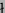

As well as finding wrong answers, Prolog programs can miss correct answers. Missing answers can be diagnosed with the same algorithm but a different kind of tree. Tree nodes can contain calls together with sets of answers returned and the children of a node can be all the calls in the bodies of matching clauses. A node is correct if all correct answers are returned and can be considered inadmissible if the input arguments violate some condition. Diagnosis of both wrong and missing answers can be done using a combination of both kinds of trees. Such a combined tree can be used to diagnose bugs in program containing negation -- ``not p'' returns a wrong answer if p misses an answer and vice versa.
Treating inadmissible atoms as being true, though somewhat counter-intuitive, results in accurate diagnoses using two-valued declarative debugging if we restrict attention to a single wrong answer diagnosis in a definite clause program. This corresponds to saying inadmissible atoms are true in the intended interpretation. However, we often repeatedly diagnose a bug, modify the program and re-test it until the intended interpretation is a model. If the oracle retains information about the intended interpretation during this process, as we would expect, or we are interested in diagnosing missing answers or negation is used, a single two-valued intended interpretation can lead to incorrect diagnosis.
For example, suppose merge([2,3], [2,1], X) returns X = [2,1,2,3] as the only answer and the user says it is true. The user must not say that merge([2,3], [2,1], [2,2,1,3]) is true during missing answer diagnosis or a bug would be incorrectly diagnosed in merge/3. In a later version of the program merge/3 may have been modified (to fix a real or imagined bug or make it more general or more efficient), so merge([2,3], [2,1], X) returns X = [2,2,1,3] as the only answer. Missing answer diagnosis of merge([2,3], [2,1], [2,1,2,3]) would then be incorrect (since the atom fails but has been previously declared to be true). Similarly, if the oracle knew that merge/3 was intended to be a function in this mode (from a user assertion or a declaration in the program, such as ``det'' in Mercury or Ciao), wrong answer diagnosis of merge([2,3], [2,1], [2,2,1,3]) would be incorrect (this is another use of negation, in the oracle rather than the program).
There are several possible solutions to these problems, but at their core is a three-valued interpretation. One solution is for the debugger to be more procedural, saying whether an atom succeeded or failed and asking if that behaviour is correct. Inadmissible atoms are precisely those for which both success and failure are considered correct. Another solution is to use two separate two-valued interpretations (an upper and lower bound on what is expected to succeed) for diagnosis of wrong and missing answers, respectively. The lower bound should be a subset of the least model but (if it is not empty) means correct programs cannot simply fail. Inadmissible atoms are those with differing truth values in these two interpretations. The verification method proposed in [Drabent and MikowskaDrabent and Mikowskapear], which we discuss in more detail in Section 6, essentially uses this approach. The approach of [NaishNaish1992b] which uses two separate programs, one with additional ``type'' (admissibility) checks, is also similar. Atoms which succeed in the original program and fail in the augmented program are inadmissible, though there may also be other inadmissible atoms which fail in both programs (so there is a procedural element to this approach which we avoid here).
Figure shows some of the multitude of different ways even/1 and odd/1 can be defined using ``successor'' notation for numbers. Some of the 16 possible combinations (such as the one shown, using e4 and o2) rely on negation. A semantics which allows us to easily check the partial correctness of these programs is desirable. Different version have different success sets: in some versions various inadmissible atoms succeed (for example, even(s(s([])))) and for one version nothing succeeds (everything loops). However, these differences do not reflect different programmer intentions and the programmer does not know or care which inadmissible atoms succeed in the different versions. Any semantics which varies between the different versions makes it impossible for the programmer to first decide on the intended meaning then have the freedom to code any of the versions. The semantics we provide in this paper allows the same intended model for all versions of even and odd, respectively, giving this freedom.
The freedom to write looping programs is not a good thing in itself. This is a disadvantage of our semantics but is an unavoidable consequence of using a simple semantics which deals only with partial correctness. Programmers do need to consider termination (and efficiency), but we believe separate tools are desirable for these purposes. Separation of concerns can help with program construction and is particularly useful for debugging, where termination can be observed instead of proven (or conjectured or hoped for).